Collection · medieval stair-wall group
Walk the updated rooms · Previous grille pass
WASD to walk; Space resets;2 opens the European gallery,3 the French gallery. Added the two stone figures beside the stair door, their brackets/backplates, open double leaves and black door hardware. RISD photographs match Apostle41.046 on the left and41.045 on the right. Their catalogue width/height supplies scale. Exact placement, depth and room dimensions are provisional. Both Muse sculpture passes alter surviving damage and remain unaccepted; these are preliminary shape/style studies. The actual stair landing beyond the door is still a capped threshold. Full reconstruction remains unfinished.
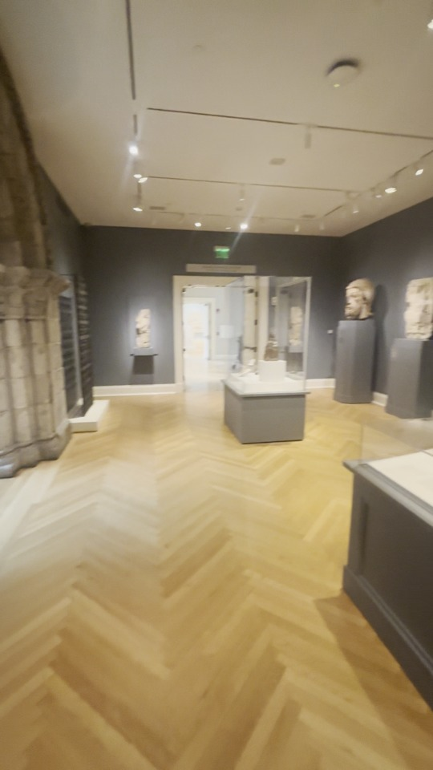
Source wide: portal and grille at left, Apostles beside the stair door, tall case in front. The source stair landing and remaining right-wall sculptures are not complete in the model.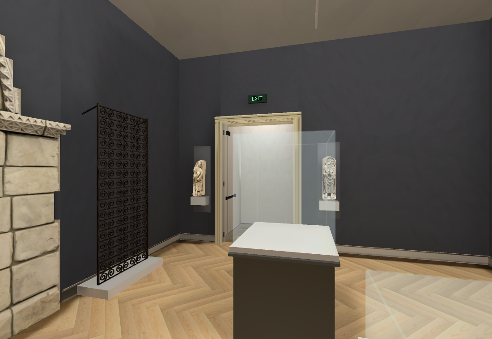
Current baked wide: left/right bracket group and open door hardware added. Case contents, room proportions, source lighting and real stair view remain unfinished. Previous pass: grille present, stair-wall sculptures and door leaves missing.
Previous pass: grille present, stair-wall sculptures and door leaves missing. Current door group: two open leaves,black push bars,hinges and closers,green EXIT. Existing Muse ivory panel textures reused; leaf dimensions/swing/panel details provisional.
Current door group: two open leaves,black push bars,hinges and closers,green EXIT. Existing Muse ivory panel textures reused; leaf dimensions/swing/panel details provisional.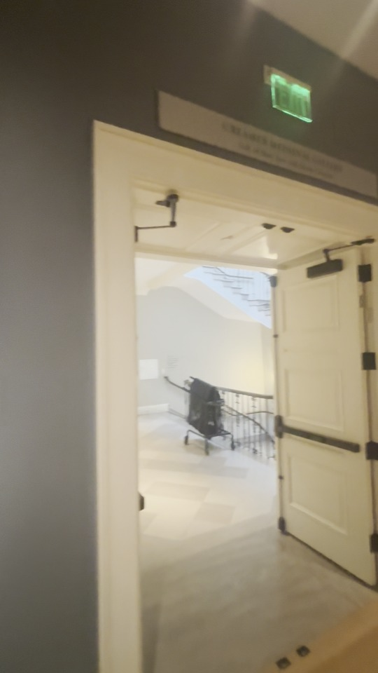
Native20.75s: door leaves open into the bright stair landing, with push bars and closers.Native baked door detail. The plain wall beyond remains a temporary threshold cap, not reconstructed stairs.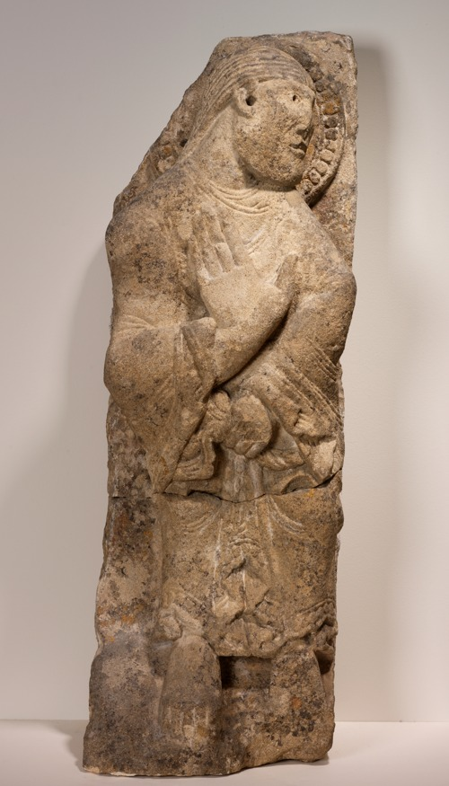
Official RISD Apostle41.046: turned head, diagonal arm, damaged robe and irregular broken slab. Catalogue82.6×26.7cm height/width.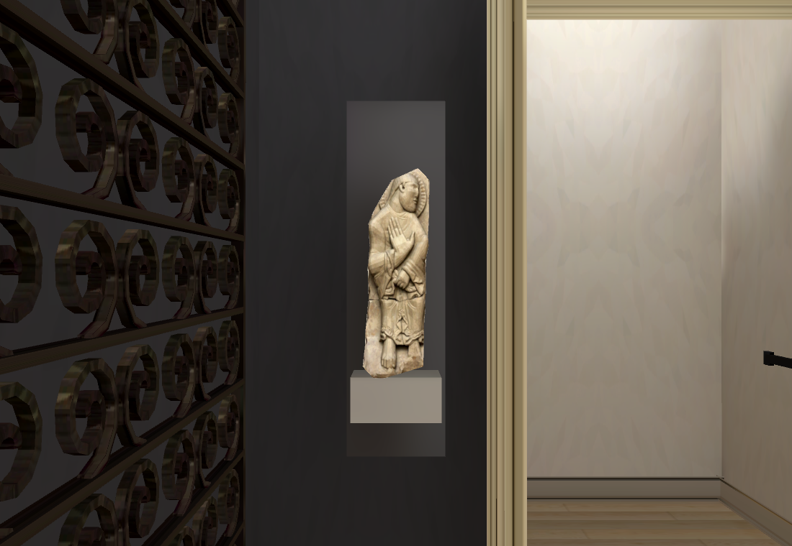
Left Muse/native study: source identity/side matched, catalogue size used. Generation repairs eroded facial/robe detail; not accepted as a faithful sculpture.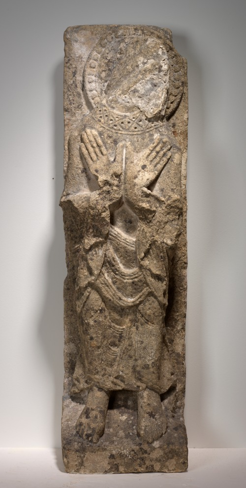
Official RISD Apostle41.045: missing face, crossed hands, worn collar/folds and broken cavity above feet. Catalogue86.4×25.4cm height/width.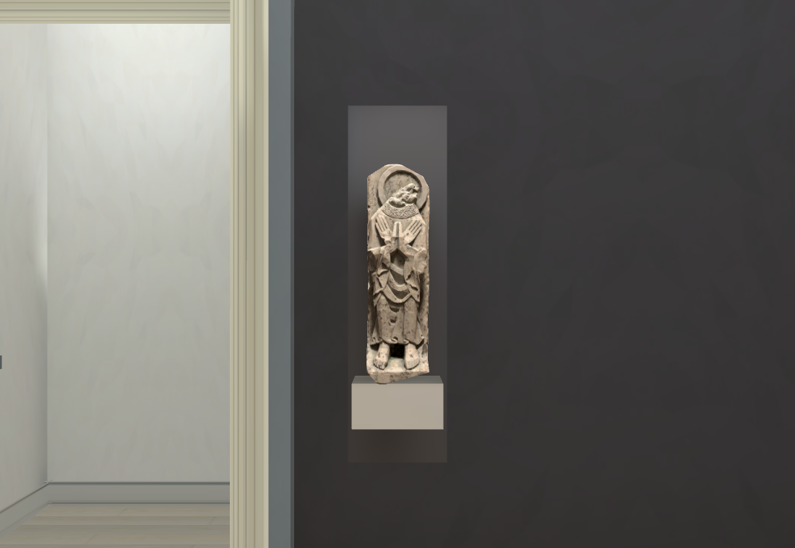
Right Muse/native study: generation invents a projecting head fragment and cleans surviving ornament despite the damage-preservation prompt. Unaccepted; no blind retry.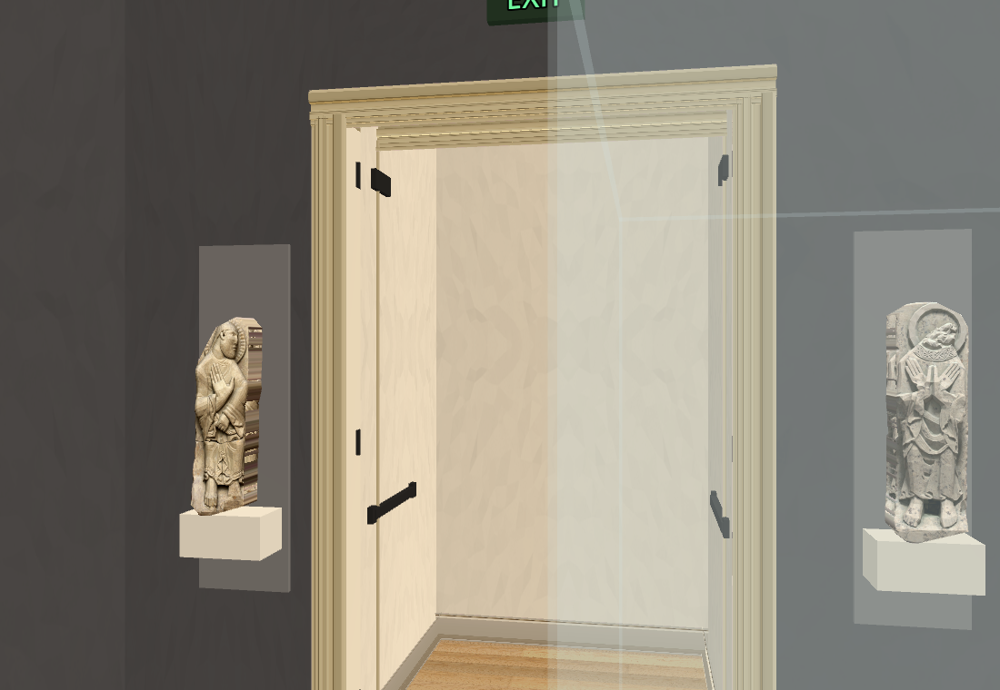
Initial native study: repeated frontal UVs stretch face/robe colours into bands on slab sides.Side UVs corrected to plain stone colour from the same Muse image. Native relief remains a simplified closed slab; nominal12cm depth and profile provisional.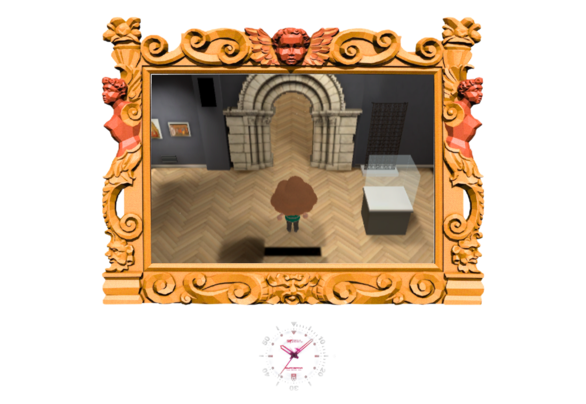
Actual elevated walking camera retains ceiling cutaway and connected routes. The source camera is eye height; this is presentation proof.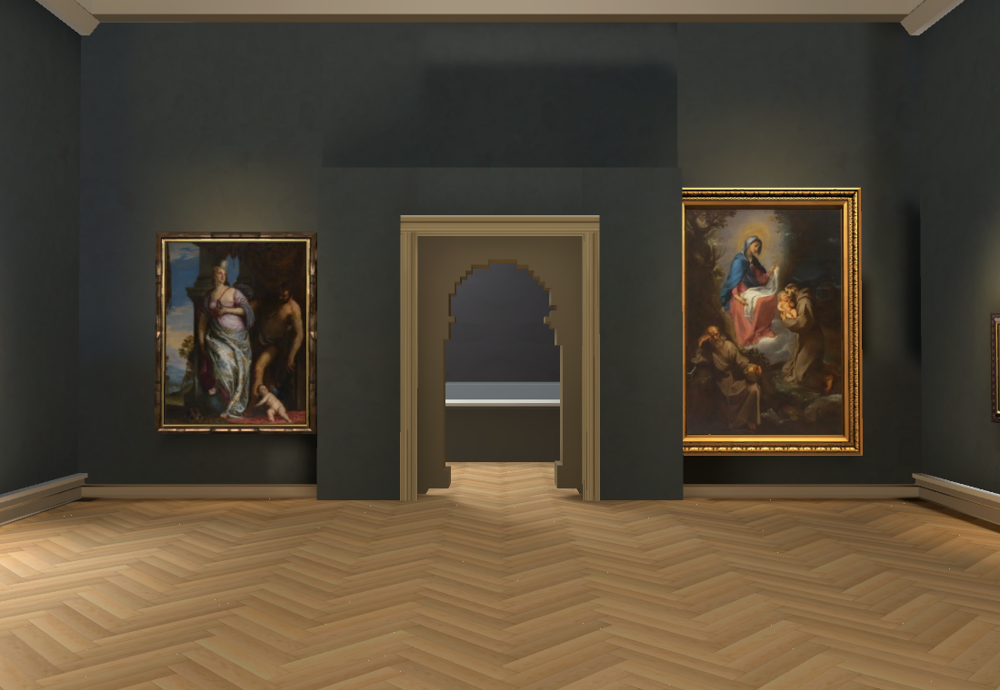
Existing Main Hall presentation,lighting,23 paintings and visitor retained.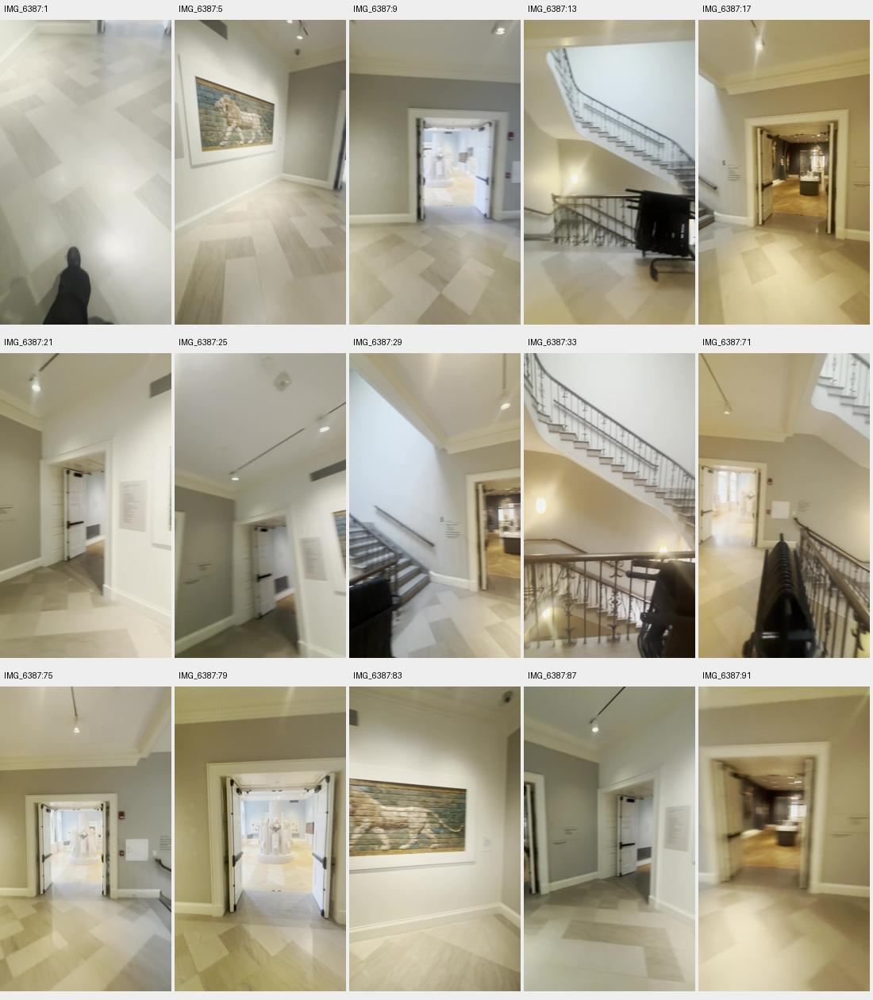
Reciprocal6387 source: lion landing has three distinct doors,ascending/descending stair flights and temporary chair rack. Not built yet.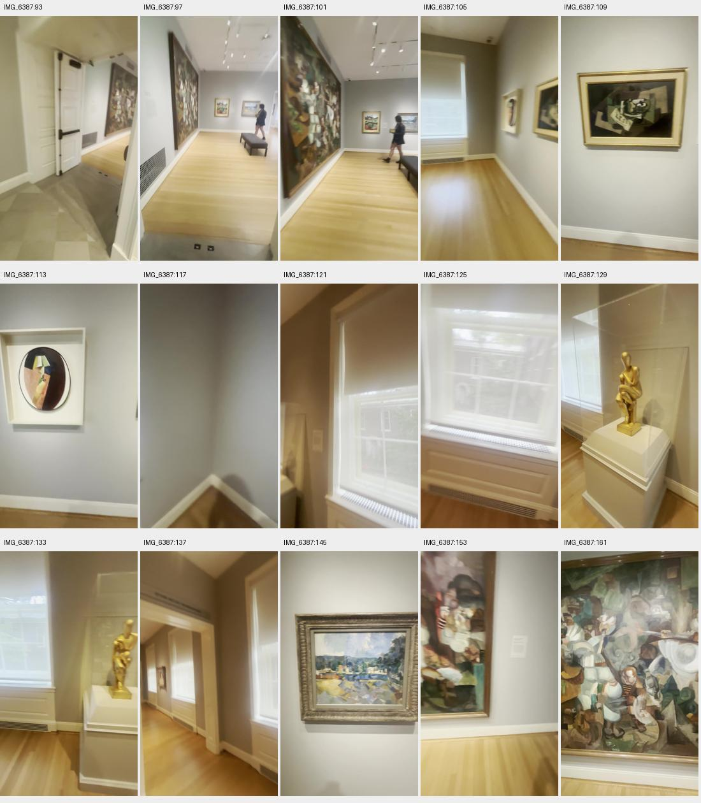
Next room constraints from6387: straight boards,bench,three windows,separate window-wall opening and ordered painting/sculpture groups. Room not built yet.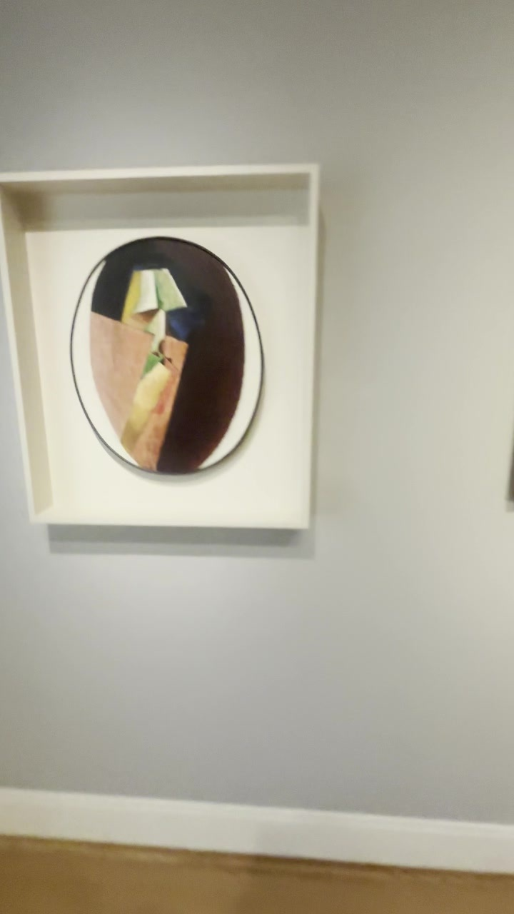
6387 frame113, rotated clockwise: oval portrait beside Braque, white square frame.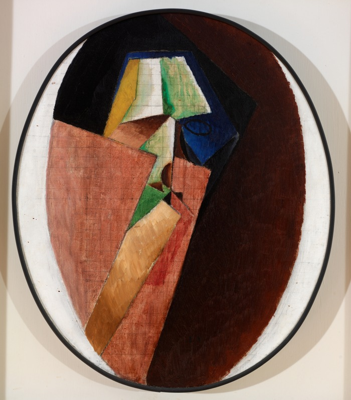
Official RISD Jacques Villon, Head of a Woman70.058,54.8×46cm. Distinct face planes/background match; identity verified, native asset and modern room placement still unfinished.900 native surfaces baked with CPU Vulkan fallback. RTX4070SUPER Chrome158/158 navigation/camera checks plus real keyboard round trip and33 continuous circuit segments,p9531.25ms,errors[]. Each prepared relief mesh has162 vertices,320triangles and480opposite paired edges with positive volume; that check proves closure only. Owning Shell46/50,4 existing failures retained. Repository/diff checks pass. No new native performance claim;60fps target unresolved.
Two OpenRouter Muse outputs,$0.02 this pass; native originals/receipts/reservations/source hashes retained. Both fail complete damage fidelity and remain unaccepted. Cumulative$0.77 actual/$0.78 conservative. Heartbeat disabled; sole main worker. Next build source-constrained lion landing/modern-room connections and refine room/door/object placement,remaining contents and track lighting. No invented connector to piano stairs or auditorium.
Left Muse review · Right Muse review · Prepared mesh closure/UV proof · Browser report